السلسلة 30
السيارة (صنف B) · 40 سؤال بالصوت. حاول تجاوب بوحدك، من بعد شوف الجواب.
السؤال 1
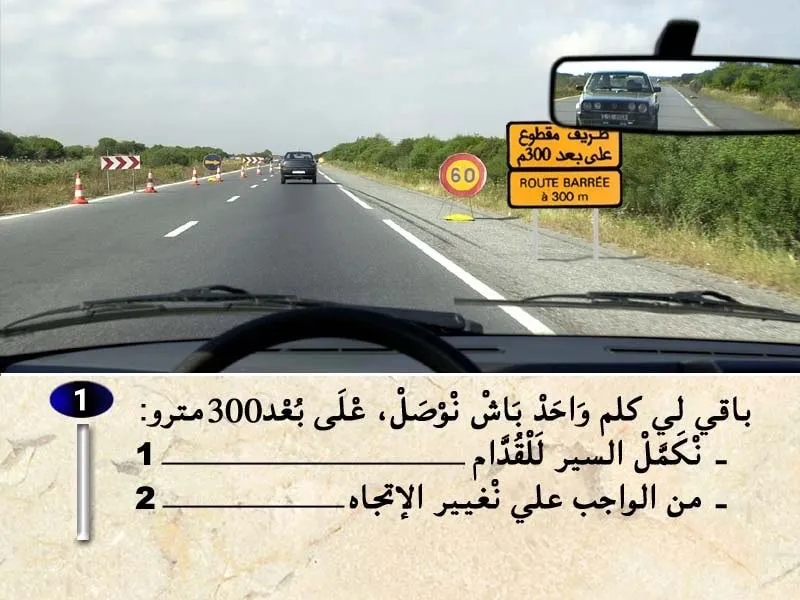
بيّن الجواب
الجواب الصحيح: 2
كما تشير إليه العلامة الطّرقية، فإنها تشير على أنه بعد 300 متر سوف تصبح الطّريق مقطوعة، أي سوف يتغيّر اتّجاهي وسوف أُصبح مجبر على تغيير الاتّجاه.
السؤال 2
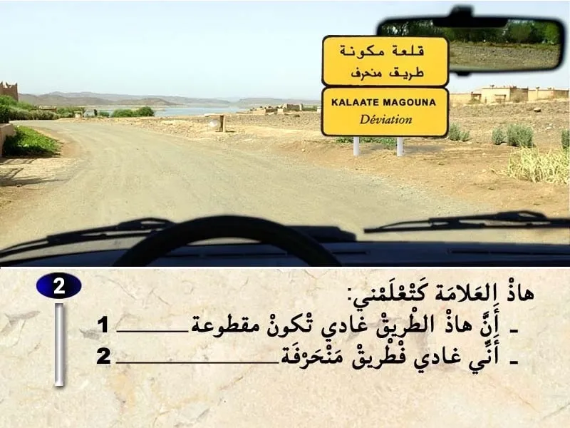
بيّن الجواب
الجواب الصحيح: 2
كما تشير إليه العلامة الطّرقية، فإن الطّريق سوف تُصبح منحرفة.
السؤال 3
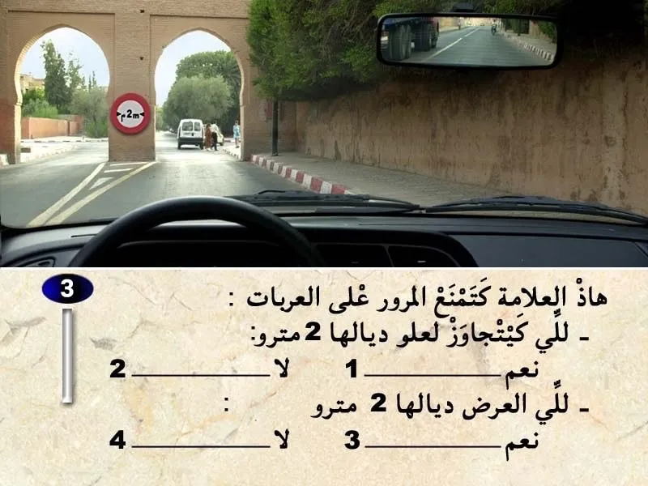
بيّن الجواب
الجواب الصحيح: 2 و 4
علامة المنع التي توجد في الصّورة فهي لا تمنع مرور العربات التي يتجاوز علوّها 2 أمتار، لأن علامة المنع هذه فهي خاصة بالعرض وليس بالعلو. بالنسبة للعرض فهي تمنع العربات التي يتجاوز عرضها 2 أمتار يعني مثلا تمنع العربات التي يكون عرضها 2.5 أمتار أو 3 أمتار إلخ.. يعني العربات التي عرضها 2 أمتار يمكنها المرور ولا يطبّق عليها المنع. إذن الإجابة الصّحيحة 2 و 4.
السؤال 4
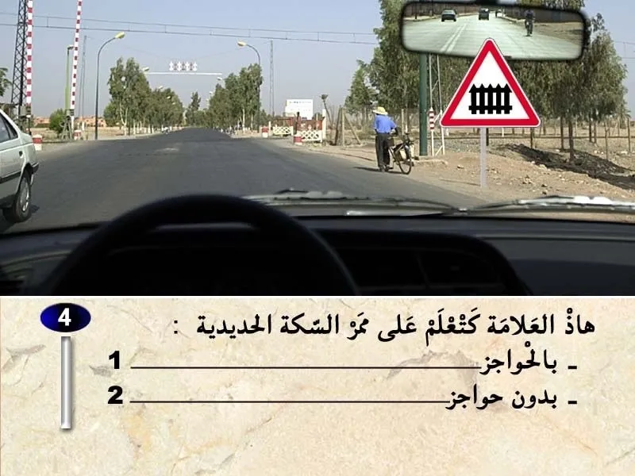
بيّن الجواب
الجواب الصحيح: 1
العلامة الطّرقية تعني ممر للسكك الحديدة بالحواجز. بالنسبة للعلامة الطّرقية التي تعني أن ممر السكك الحديدية بدون حواجز يكون مرسوم فيها قطار.
السؤال 5
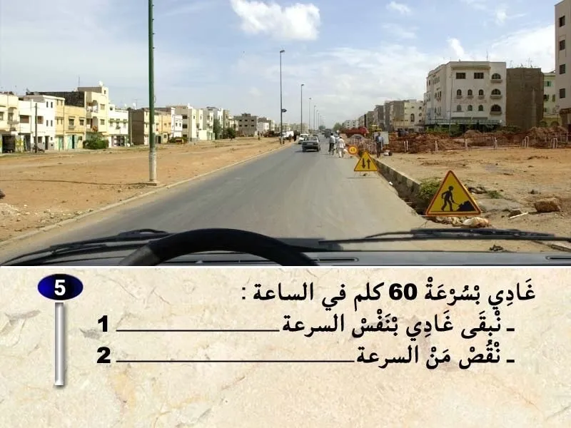
بيّن الجواب
الجواب الصحيح: 2
عندنا توجد العلامات المؤقتة الخاصة بالأشغال، فيجب عليّ دائما الإنقاص من السرعة.
السؤال 6
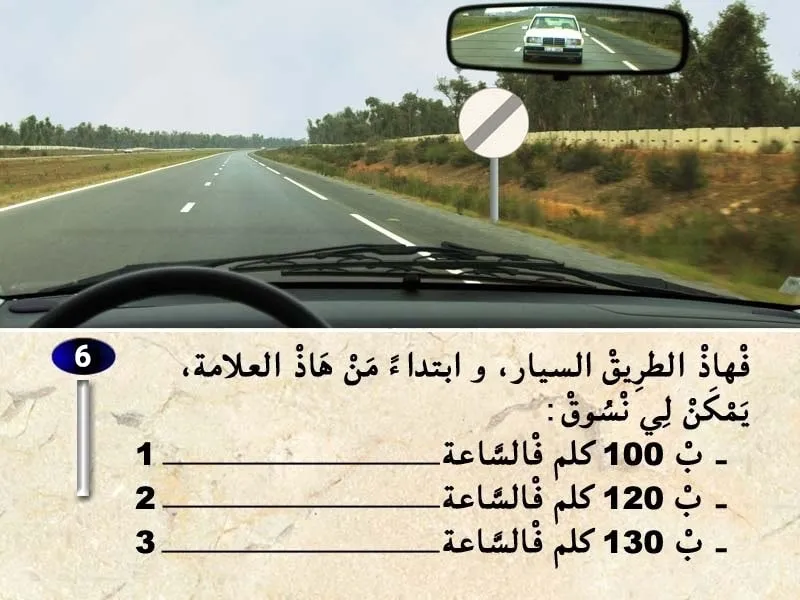
بيّن الجواب
الجواب الصحيح: 1 و 2
العلامة الطّرقية تشير على أن المنع الذي كان لديّ سابقا قد إنتهى، بما أننا أسير في طريق سّيار إذن فالسرعة القصوى التي يمكنني السّير بها هي 120 كلم في الساعة، إذن في هذه الحالة يمكنني السّير ب 100 كلم في الساعة أو 120 كلم في الساعة.
السؤال 7
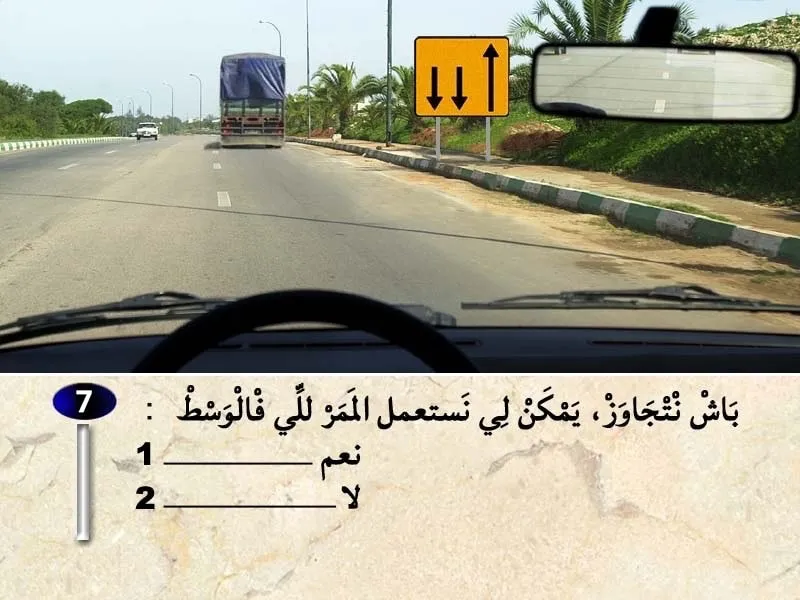
بيّن الجواب
الجواب الصحيح: 1
العلامة العمودية تشير على أنه يوجد لديّ مسلك واحد للسّير العادي، ومسلكين للسيارات القادمة في الاتّجاه المعاكس، هذا ما تشير إليه، وهي لا تشير إلى أنه لا يمكنني استعمال المسلك الثاني لكي أتجاوز بما أن التّشوير الأفقي الخط المتقطّع يسمح لي بذلك. إذن يمكنني استعمال المسلك الذي يوجد على اليسار للتّجاوز.
السؤال 8
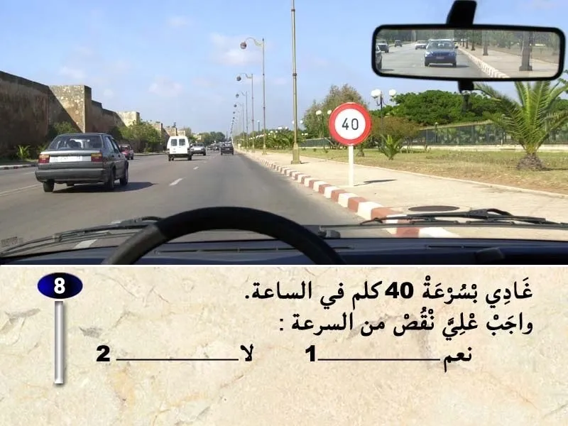
بيّن الجواب
الجواب الصحيح: 2
العلامة الطّرقية تعني تحديد السرعة في 40 كلم في الساعة. أي أن العلامة الطّرقية تمنعني من السّير بأكثر من 40 كلم في الساعة. بما أنني أسير ب 40 كلم في الساعة إذن أنا أحترم العلامة الطّرقية وليس واجدب عليّ أن أنقص من السّرعة.
السؤال 9
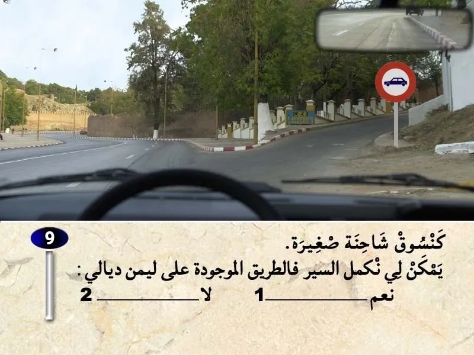
بيّن الجواب
الجواب الصحيح: 2
شاحنة صغيرة تعني سيّارة عادية، أي التي تتطّلب رخصة السياقة من صنف (ب)، وبالتّالي تمنع مرور السّيارات التي تحتاج إلى رخصة السياقة من صنف (ب) إذن فهي تعنيني، إذن لا يمكنني أن أكمل السّير في الطّريق الموجودة على يميني.
السؤال 10
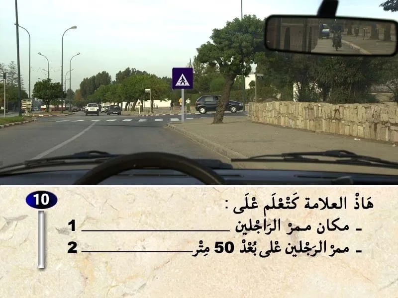
بيّن الجواب
الجواب الصحيح: 1
الإشارة الطّرقية تشير إلى وجود ممر راجلين في نفس المكان وليس على بعد 50 متر.
السؤال 11
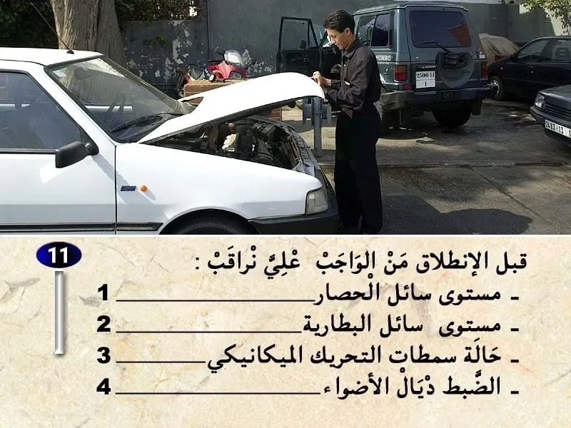
بيّن الجواب
الجواب الصحيح: 1 و 2 و 4
قبل الانطلاق دائما فيجب عليّ التاكد ومراقبة كل من مستوى الحصار يعني مستوى زيت الفرامل، أيضا يجب عليّ التاكد من مستوى سائل البطّارية (في السيارات القديمة) السّيارات الجديدة لا يوجد فيها هذا السائل، بالنسبة لحالة سمطات التّحريك الميكانيكي فهي مهمّة الميكانيكي ولا دخل لي فيها ولا أقوم بمراقبتها دائما. وضبط الأضواء فهو شيئ ضروري دائما قبل الانطلاق.
السؤال 12
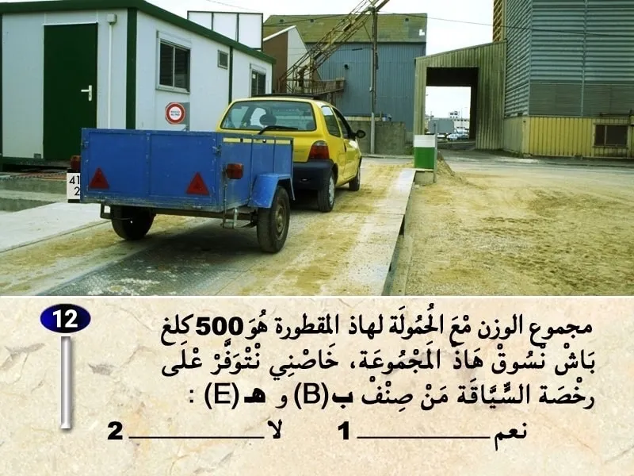
بيّن الجواب
الجواب الصحيح: 2
رخصة السّياقة التي لدي ب B فهي تُمكّنني من جر مقطورة لكن بشرط أن لا يتعدى وزنها الإجمالي مع الحمولة 750 كلغ. إذن في هذه الحالة بما أن هذه المقطورة وزنها مع الحمولة هو 500 كلغ إذن يمكنني جر هذه المقطورة فقط برخصة السّياقة من نوع ب B بدون الحاجة لرخصة السياقة هـ E، لأنها لا تتعدى وزن 750 كلغ.
السؤال 13
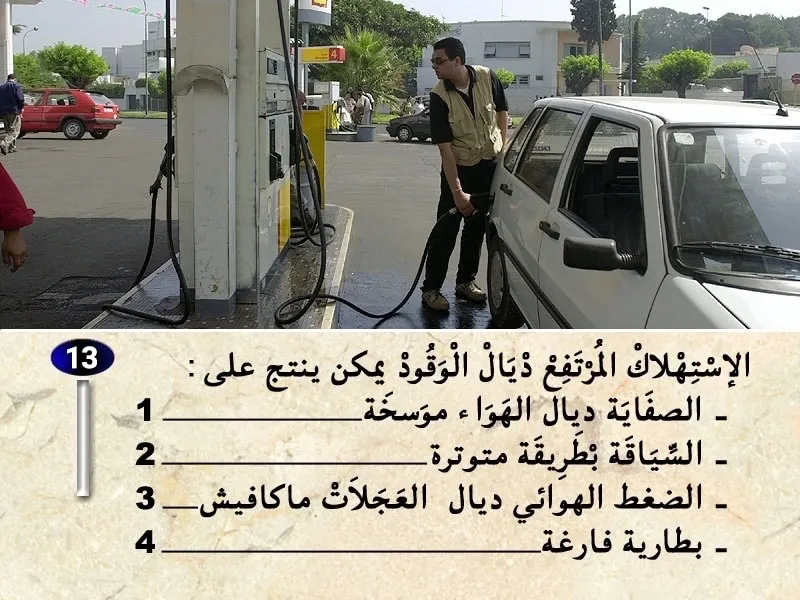
بيّن الجواب
الجواب الصحيح: 1 و 2 و 3
من بين الأسباب التي تؤدي إلى الاستهلاك المرتفع للوقود فيمكن أن يكون بسبب صفاية الهواء متّسخة، أو أن يسوف السائق العربة بطريقة متوتّرة، يعني سوف يستعمل محوّل السرعة بطريقة غير جيّدة ويضغط دواسة السرعة (لاكسيراتور) بطريقة غير جيّدة. أيضا الضغط الهوائي للعجلات غير كافي (وجود حمولة مثلا) أو جميعهم. (بطارية فارغة ليس لها دخل في إستهلاك مرتفع للوقود).
السؤال 14
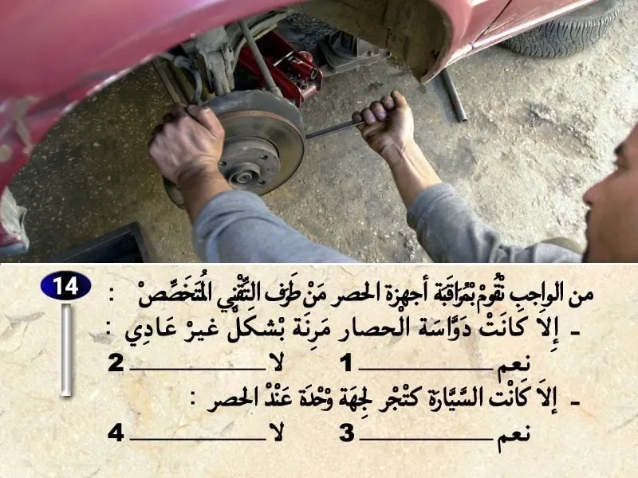
بيّن الجواب
الجواب الصحيح: 1 و 3
إذا كانت دوَّاسة الحصار (دوَّاسة الفرامل) مرنة بشكل غير عادي أي أنها خفيفة جدّا عند الضغط عليها وهذا يدل على أن الفرامل لا تعمل بشكل جيّد، فيجب عليّ في هذه الحالة أن أقوم بمراقبتها عند تقني متخصص. وعند القيام بعملية الحصر (استعمال الفرامل ) ولاحظت أن السيارة تجر إلى الجهة اليمنى أو اليسرى فهذا يدل على مشكل في الفرامل ويجب عليّ كذلك أن أقوم بمراقبة السّيارة عند التقني المتخصص.
السؤال 15
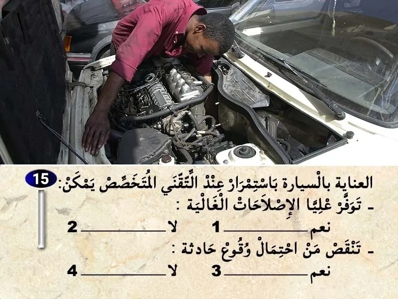
بيّن الجواب
الجواب الصحيح: 1 و 3
العناية ومراقبة السّيارة باستمرار عند التقني المتخصص فهي توفّر عليّ الإصلاحات المكلّفة لأنني سوف أقوم باكتشاف المشكلة والخلل قبل حدوثه وأيضا مراقبة السيّارة باستمرار سوف تجنّبني إحتمال الوقوع في حادثة لأن هذه المراقبة سوف تقوم بإصلاح المشاكل المتواجدة في السيّارة إذا وجدت وبالتالي السّياقة بسيارة بدون مشاكل تنقص من إحتمال الوقوع في حادثة.
السؤال 16
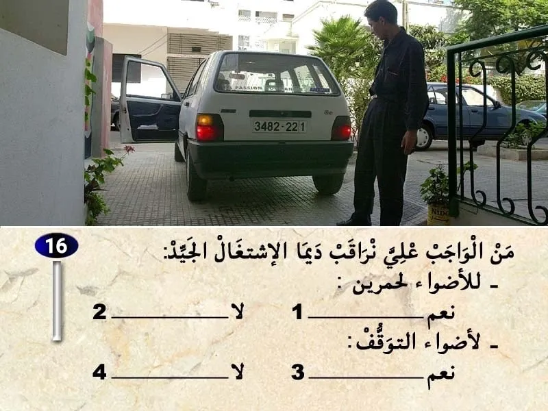
بيّن الجواب
الجواب الصحيح: 1 و 3
بصفة عامة فإن مراقبة أضواء السّيارة كيفما كانت فهي من الأمور الواجب عليّ القيام بها باستمرار.
السؤال 17
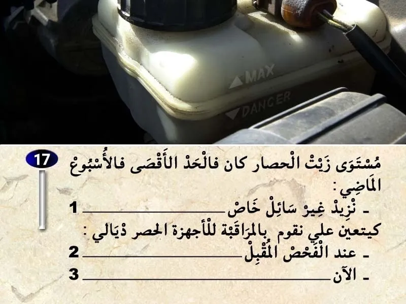
بيّن الجواب
الجواب الصحيح: 3
إذا كان مستوى زيت الحصار (الفرامل) في الحد الأقصى الأسبوع الماضي وأصبح قرب مستوى MINI كما توضّح الصورة فهذا يدّل على أن هنالك إستهلاك مفرط وكبير لزيت الحصّار (الفرامل) ويوجد مشكل لأن إستهلاك زيت الحصّار كبير جدا. إذن في هذه الحالة بما أن هنالك مشكلة في أجهزة الحصر الخاصة بي فيجب عليّ أن أقوم بفحص المشكل الان عند أقرب مركز فحص. وليس عند الفحص القادم لأن المشكلة خطيرة خصوصا عندما يتعلق الأمر بالفرامل. لا يمكنني فقط إضافة سائل الفرامل والسّير لأن هذه الجملة في السؤال (أقوم بإضافة غير سائل خاص، فهي تعني هذا هو الحل فقط، لكن لا، يجب عليّ الان الذّهاب إلى مركز الفحص وليس زيادة فقط سائل خاص). الإجابة الصحيحة هي رقم 3.
السؤال 18
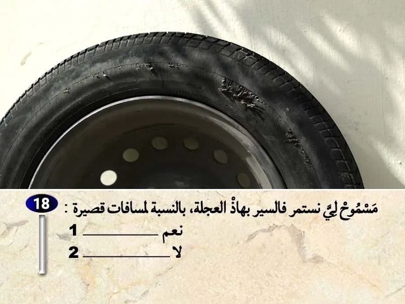
بيّن الجواب
الجواب الصحيح: 2
كما تظهر الصورة فإن هذه العجلة في حالة غير جيّدة ويبدو عليها تآكل واضح، لذلك غير مسموح لي بإستعمال هذه العجلة للسّير.
السؤال 19
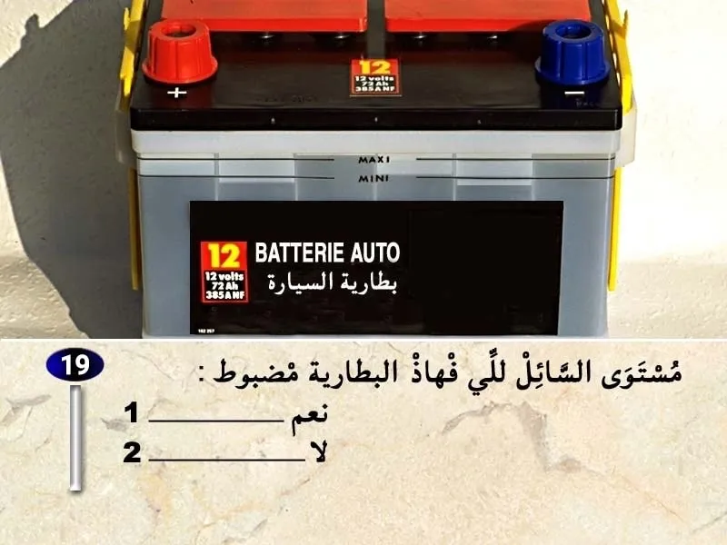
بيّن الجواب
الجواب الصحيح: 2
كما نلاحظ فإنه بعض المستويات في هذه البطّارية تحت MINI (الحد الادنى) وهدا يعني على أن مستوى السائل في هذه البطّارية غير مضبوط.
السؤال 20
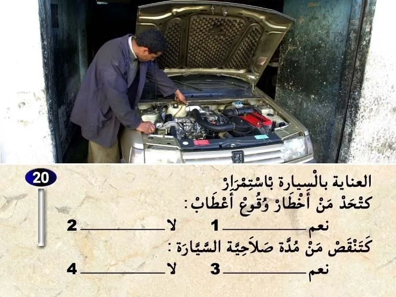
بيّن الجواب
الجواب الصحيح: 1 و 4
العناية بالسّيارة ومراقبتها بشكل دائما يجنّبها خطر الوقوع في اعطاب ومشاكل ميكانيكية. كما أن هذه المراقبة لا تنقص من مدة صلاحية السّيارة، بل بالعكس تحافظ هذه المراقبة الدّورية للسيارة في إطالة مدة صلاحية السّيارة وليس النقصان.
السؤال 21
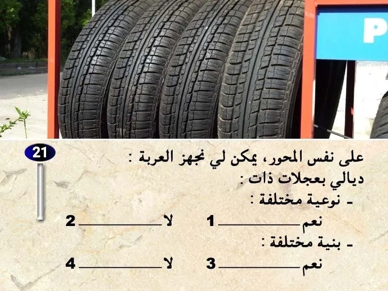
بيّن الجواب
الجواب الصحيح: 1 و 4
السيارة تحتوي على محورين للعجلات، المحور الذي يوجد في أمام السّيارة والذي يحتوي على عجلتين، والمحور الثاني الذي يوجد في الخلف والذي يحتوي على عجلتين أيضا. في نفس المحور لا يمكن أن أستعمل عجلتين مختلفتين في البنية، مثلا لو كانت عَجَلَة واحدة مقاسها 18، فيجب أن أستعمل أيضا نفس المقاس في العجلة الثانية وليس أن أستعمل مقاس مختلف 19 أو 20 ... بالنسبة لاختلاف مَصْنَعْ العجلات (شَرِكة العجلات) فليست هنالك مشكلة في استعمال عجلات ذات مَصْنَعْ مختلف لأن الأهم هو استعمال عجلات بنفس البنية في نفس المحور الخاص بالعربة.
السؤال 22
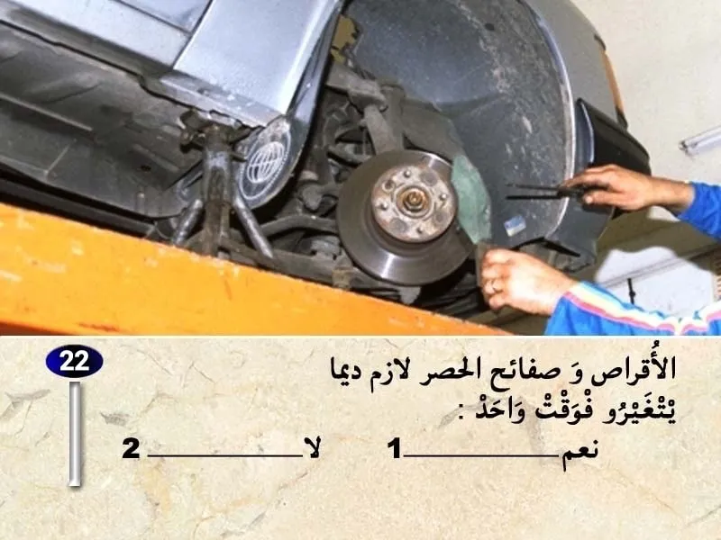
بيّن الجواب
الجواب الصحيح: 2
أقراص وصفائح الحصر (صفائح الفرامل) يتم مراقبتهم تقريبا كلّما قطعنا مسافة 30000 كلم، بالنسبة للمراقبة، فإن الميكانيكي يقوم بمراقبة الأقراص هل لازالت صالحة أم لا. ليس من الضّروري تغيير أقراص وصفائح الحصر في وقت واحد.
السؤال 23
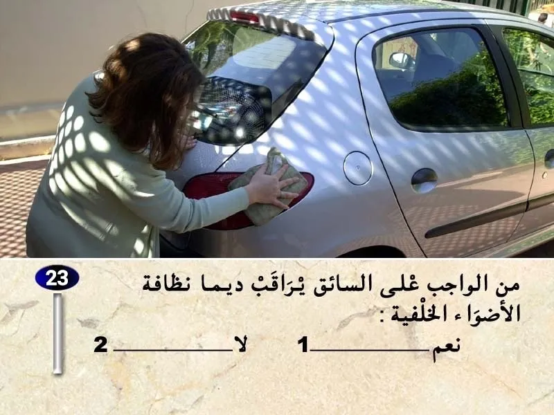
بيّن الجواب
الجواب الصحيح: 1
بطبيعة الحال فمراقبة نظافة الأضواء الخلفية للسّيارة فهي من الأمور الضرورية التي يجب على السائق القيام بها بشكل دوري قبل الانطلاق.
السؤال 24
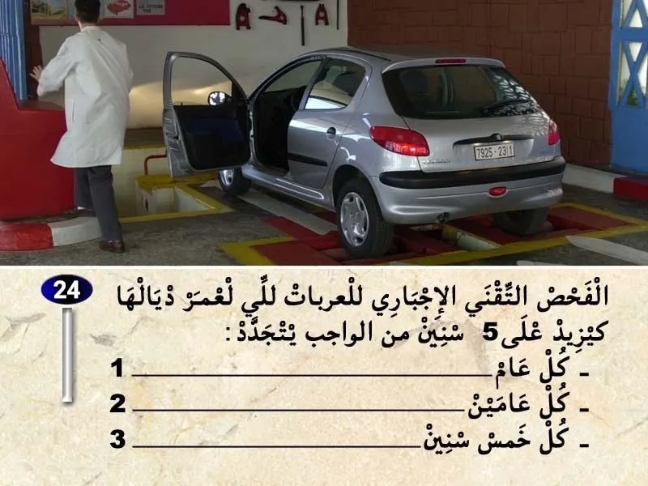
بيّن الجواب
الجواب الصحيح: 1
عندما تكون السّيارة جديدة فلا نقوم بعمل فحص تقني لها حتى يصل عمرها إلى 5 سنوات. وفي تلك اللحظة عندما يصل عمر السّيارة إلى 5 سنوات فإنه من الواجب القيام بالفحص التّقني كل عام.
السؤال 25
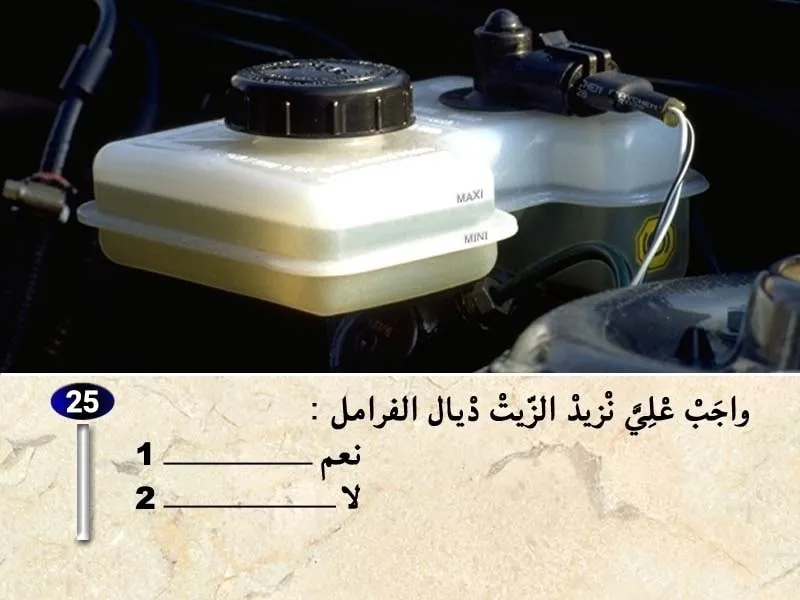
بيّن الجواب
الجواب الصحيح: 2
ليس من الضروري أن يكون مستوى زيت الفرامل في مستوى MAXI لكي نقول عنه أنه كاف، فأيضا لو كان متسوى زيت الفرامل بين مستوى MAXI و MINI فإن هذا المستوى كاف. إذن في الصورة يتّضح أن مستوى زيت الفرامل كيف وليس من الواجب عليّ زيادته. (فقط لا يجب أن يكون أقل من MINI، لأنه سوف يكون غير كاف ويجب عليّ إضافته).
السؤال 26
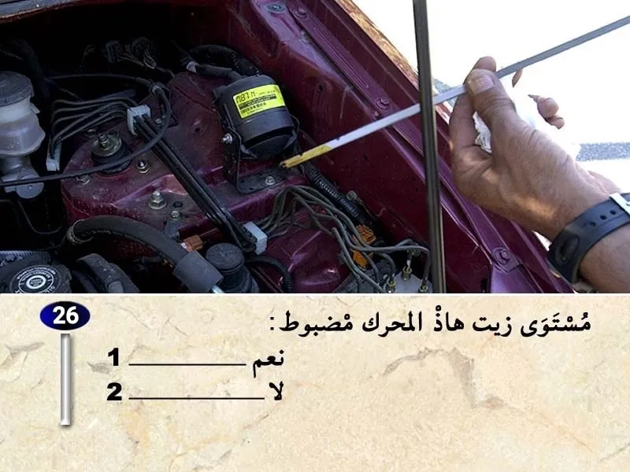
بيّن الجواب
الجواب الصحيح: 1
زيت المحرّك لإنه من الأمور الضرورية التي يجب عليّ مراقبتها باستمرار. كما توضّح الصورة فإن مقياس الزيت يوضّح أن مستوى الزّيت بين تلك الفتحات (في المنتصف) وهذا يعني أنه كاف و مضبوط. نقول أنه غير كافي أو غير مضبوط عندما تكون الزيت أسفل الفتحة في الأسفل التي توجد في مقياس الزيت.
السؤال 27
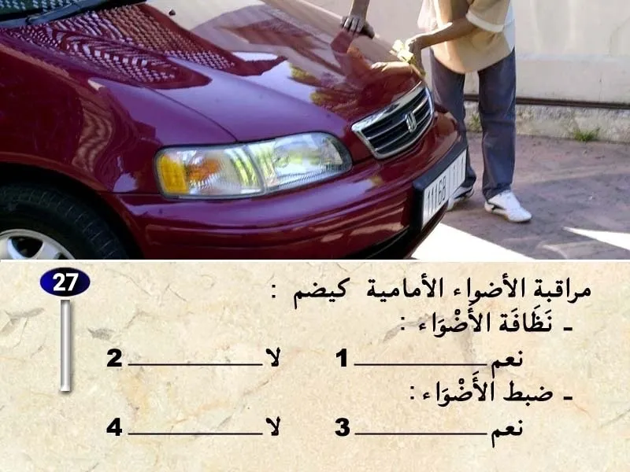
بيّن الجواب
الجواب الصحيح: 1 و 3
عندما أقوم بمراقبة الأضواء فيجب عليّ التأكد من نظافتهم لكي أتأكد أنها نظيفة والأضواء سوف تكون مرئية. وأيضا هذه المراقبة تشتمل على ضبط مستوى الأضواء (ضبط مجال الإضاءة).
السؤال 28
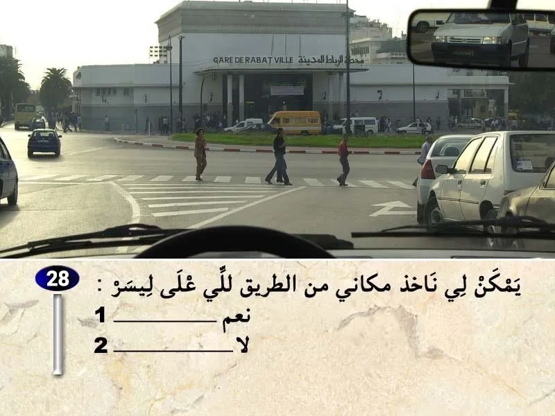
بيّن الجواب
الجواب الصحيح: 2
في الصورة تظهر أسهم الإجبار مرسومة على الأرض، وهي تجبرني على إكمال السّير مباشرة أو الانعطاف على اليمين، وأيضا المكان الذي يظهر في وسط الصورة وفيه خطوط فممنوع علي الوقوف او التوقّف فيه وأيضا ممنوع عليّ السّير فيه. إذن لا يمكنني أخد مكان من الطّريق التي على اليسار.
السؤال 29
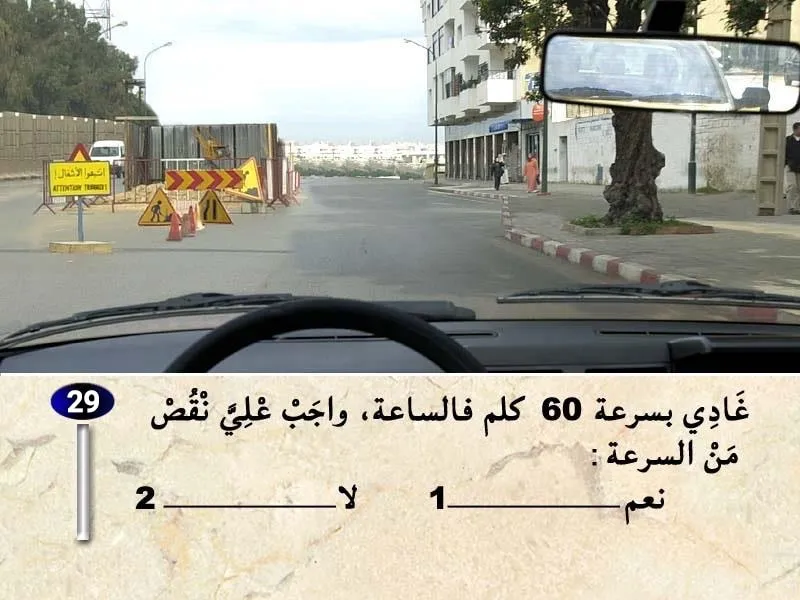
بيّن الجواب
الجواب الصحيح: 1
عندنا توجد العلامات المؤقتة الخاصة بالأشغال، فيجب عليّ دائما الإنقاص من السرعة.
السؤال 30
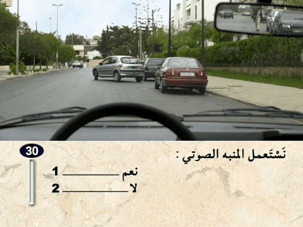
بيّن الجواب
الجواب الصحيح: 2
داخل التجمّع السكني فاستعمال المنبّه الصّوتي فهو ممنوع إلاّ في حالة وجود خطر أو للضرورة. في هذه الحالة لا يوجد خطر والسيّارة فقط تستعد لعملية التوقّف إذن لا أستعمل المنبّه الصّوتي.
السؤال 31
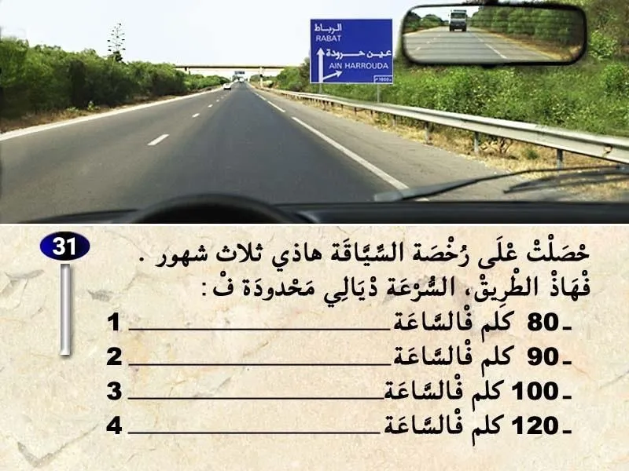
بيّن الجواب
الجواب الصحيح: 2
حصلت على رخصة السّياقة منذ 3 أشهر وهذا يعني على أنني لازلت في الفترة الاختبارية ومدّتها سنتين (2)، و تسمح لي بسياقة السيّارة بسرعة قصوى تصل إلى 90 كلم في الساعة. إذن في الطّريق السيّارة أيضا فَسُرعتي محدودة في 90 كلم في الساعة ولا أستطيع تجاوزها.
السؤال 32
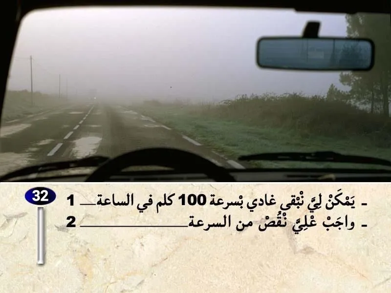
بيّن الجواب
الجواب الصحيح: 2
أتواجد في طريق وطنية والسّرعة فيها محدودة في 100 كلم في الساعة، لكن عندما تكون أحوال الطّقس صعبة (مطر، ضباب، ثلج…) فدائما يجب عليّ أن أنقص من السرعة لأنه في أحوال الطّقس الصعبة يوجد خطر أكثر.
السؤال 33
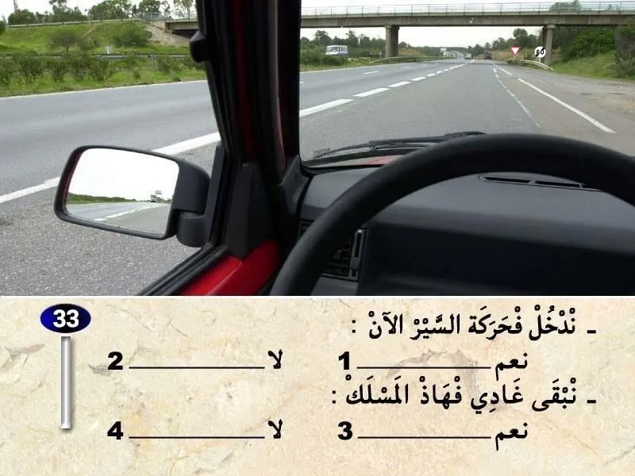
بيّن الجواب
الجواب الصحيح: 2 و 3
أتواجد في مسلك الاندماج، ولكي أدخل في حركة السّير بإستعمال المسلك المتواجد على اليسار فلا يمكنني الان لأنه الخط الذي على اليسار فهو متّصل لذلك لا يمكنني الدخول في حركة السّير الان ويجب عليّ إكمال السّير في المسلك الذي أتواجد فيه الان إلى حين أن يصبح الخط متقطّع على اليسار وبعد ذلك يمكنني الدخول في حركة السير.
السؤال 34
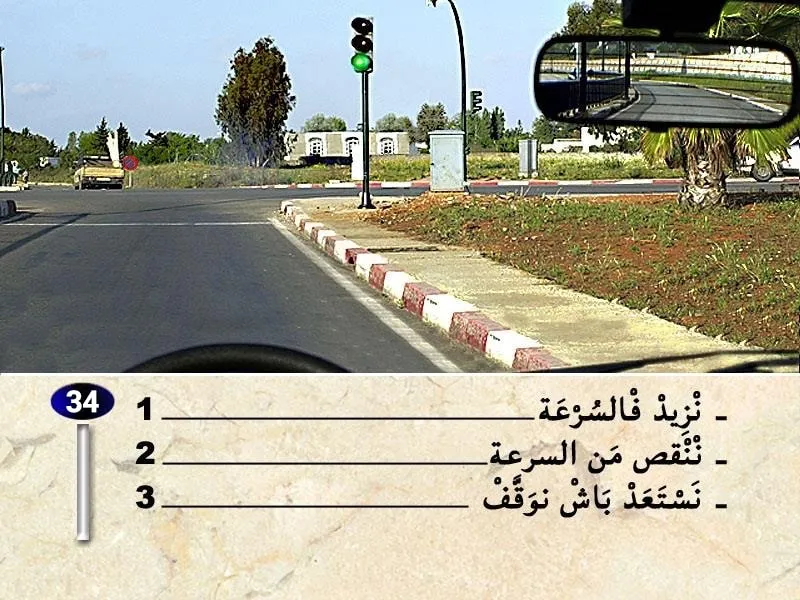
بيّن الجواب
الجواب الصحيح: 2 و 3
لدي حق المرور بما أن الإشارة الضّوئية خضراء تسمح لي بالمرور، وبما أنّني قرب ملتقى طرق فيجب عليّ الانتباه وذلك عبر الإنقاص من السّرعة الاستعداد للوقوف لأنه ربّما تكون سيّارة قامت بمخالفة ولم تقم بالوقوف وسوف تقوم بالمرور. لذلك أقوم بالمرور وفقط أقوم بالانتباه بالإنقاص من السّرعة وأن أستعد للوقوف إذا كان هنالك خطر.
السؤال 35
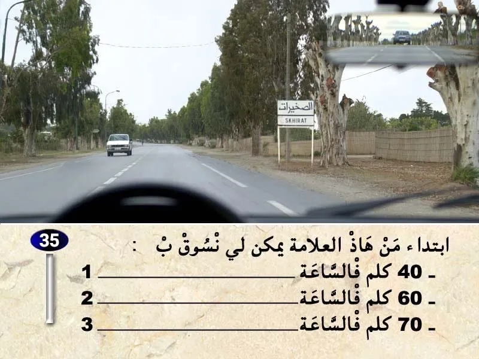
بيّن الجواب
الجواب الصحيح: 1 و 2
العلامة الطّرقية خاصة بالإرشاد وهي تعلمني على أنني سوف أدخل إلى تجمع سكني (الصخيرات) وفي المجال الحضري فالسرعة القصوى هي 60 كلم في الساعة، إذن إبتداء من هذه العلامة يمكنني السياقة بسرعة 40 كلم في الساعة وأيضا يمكنني السياقة بسرعة 60 كلم في الساعة.
السؤال 36
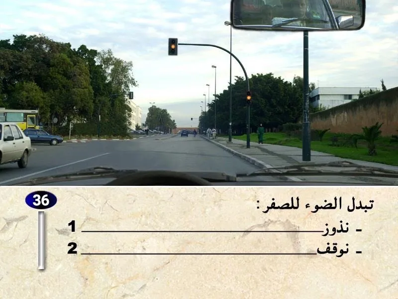
بيّن الجواب
الجواب الصحيح: 2
الضوء الأصفر يبقى ثواني قليلة وبعد ذلك يشتغل الضوء الأحمر، القاعدة تجبرني على الوقوف عند اشتعال الضوء الأصفر. لكن هنالك استثناء: مسموح بالمرور في الضوء الأصفر إذا كان الوقوف سوف يعرِّضْ للخطر. مثال إذا كنت سوف أقف وأفاجِأْ عربة من الخلف كانت قريبة منّي سوف أعرّضها لخطر الاصطدام بالعربة الخاصة بي. في هذه الحالة مسموح لي بالمرور في الضّوء الأصفر.
السؤال 37
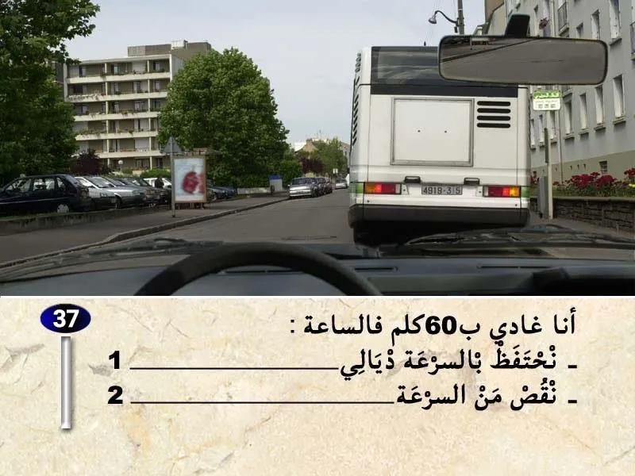
بيّن الجواب
الجواب الصحيح: 2
بما أن الحافلة استعملت الفرامل (الضوء الفرامل الحمراء من الخلف) إذن فهذا يعني على أن الحافلة تستعد للوقوف لأنها وصلت إلى محطة وقوف كما توضّح أيضا الإشارة الطّرقية على اليمين. إذن في هذه الحالة بما أن الحافلة تستعد للوقوف فيجب عليّ الإنقاص من السرعة.
السؤال 38
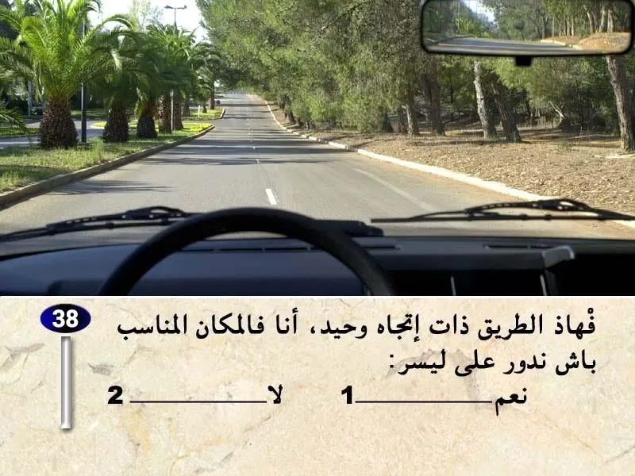
بيّن الجواب
الجواب الصحيح: 2
حتى وإن كانت الطّريق ذات إتّجاه واحد فيجب عليّ إحترام قواعد السّير، فالقاعدة تقول على أنه إذا كنت في طريق ذات إتّجاه واحد وأردت الانعطاف على اليسار فيجب عليّ أن أتواجد في المسلك المتواجد على اليسار. لكن في الصورة يظهر على أن مِقْوَدْ السيّارة يوجد في وسط الطّريق وهذا يعني على أنني أقود السيّارة في وسط الطّريق وليس في المسلك المتواجد على اليسار لكي أنعطف على اليسار. إذن أنا لست في المكان المناسب للانعطاف على اليسار.
السؤال 39
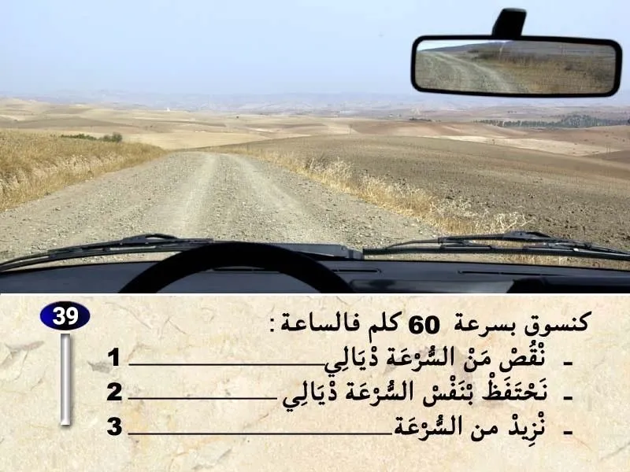
بيّن الجواب
الجواب الصحيح: 1
أتواجد في طريق غير معبَّدَة (السّياقة فيها صعبة قليلا) وأيضا يوجد أمامي منعرج، إذن يجب عليّ الإنقاص من السرعة.
السؤال 40
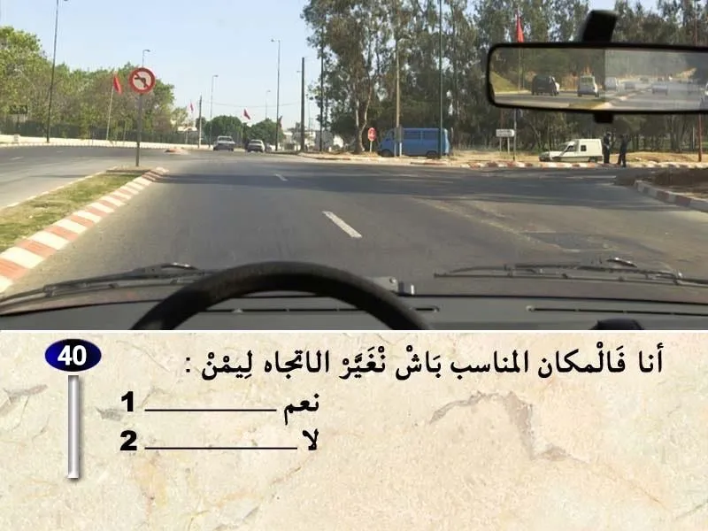
بيّن الجواب
الجواب الصحيح: 2
لكي أقوم بالانعطاف على اليمين فيجب عليّ أن أكون متواجد في المسلك المتواجد على اليمين. لكن كما تظهر الصورة فأنا متواجد في المسلك الذي يوجد على اليسار. إذن أنا لست في المكان المناسب للانعطاف على اليمين.